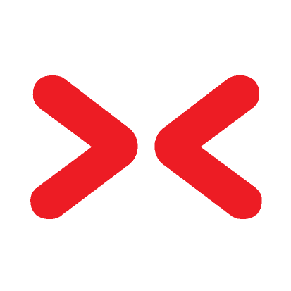
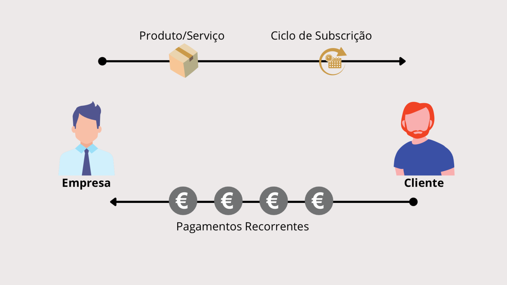

Add-On(s)
ADD-ON(s)
├── INDUSTRIA [MES]
│ └── X-PROD (b-collector)
│ └── X-COLLECTOR (prodnext)
│
├── LOGISTICA [WMS]
| └── X-LOGISTICS "Mobinext"
│
├── API(s)
│ └── X-CONNECTOR
│ └── TRANSPORTADORAS
│ │ └── CTT Express
│ │ └── TDT
| | └── MRW
│ ├── E-COMMERCE
│ │ └── WooCommerce
│ │ └── Presta-Shop
│ │ └── GO-Cart
| | └── Shopify
│ └── FINTECH
│ └── Easypay
│ └── Ifthenpay
│
└── VERTICAIS
└── X-AUTO
└── X-FRESH (Follow UP)
└── X-CC
└── X-MAINTENANCE
└── X-PETRO
└── X-STOCKS
Que modelo de negócio escolher...?
🎯 9 modelos de negócio disruptivos para empresas
Modelo Freemium
Um dos modelos de negócio mais frequentemente utilizados. Aqui, o consumidor recebe um produto ou serviço gratuitamente. Ou apenas são oferecidas funções básicas e para funções premium, nenhuma marca ou extensão de serviços, o cliente tem de pagar. Desta forma, uma ampla base de clientes pode ser alcançada rapidamente. Este modelo é especialmente aplicável para produtos ou serviços com baixos custos marginais (custos adicionais por cliente adicional) ou onde o marketing e a informação ao cliente têm um valor mais elevado do que os custos operacionais. Exemplos típicos são: Spotify, Linkedin, Xing, Canva.com, MailChimp
Modelo de Subscrição (Subscription Model)
Os produtos e serviços também podem normalmente ser oferecidos com base em assinaturas. Neste caso, uma quantia que normalmente só surgiria uma vez é dividida ou é criado um novo serviço que é facturado periodicamente. O objectivo é vincular o cliente a longo prazo. Em contraste com a compra única, o cliente beneficia de melhorias e extensões do serviço. Mesmo os produtos que não podem ser divididos podem ser convertidos numa assinatura. A Amazon já forneceu um exemplo com este sistema de como produtos como detergentes, cosméticos, etc. também podem ser entregues automaticamente numa base regular. Exemplos típicos são: Amazon, Netflix
Modelo gratuito
Um modelo que ganhou popularidade especialmente através do Google. Para muitos empresários este é também o modelo de negócio mais incompreensível, mas tem um grande potencial para alguns serviços. Uma vez que tais modelos comerciais avaliam geralmente os dados dos clientes para publicidade ou para ofertas personalizadas, é interessante utilizá-los se se puder obter muita informação sobre os clientes. Exemplos típicos são: Google, Facebook
Modelo de mercado
Para algumas indústrias, os mercados já tinham ou têm um grande potencial disruptivo. O modelo de negócio aqui utilizado é normalmente um mercado digital que liga vendedores e compradores numa plataforma comum. O dinheiro é normalmente gerado através de taxas de agência, comissões ou custos fixos de transacção. No entanto, também é possível utilizar taxas de adesão na plataforma ou gerar dinheiro através de publicidade. Exemplos típicos são: Amazon, Alibaba, Uber, eBay
Economia Partilhada – Modelo de Acesso à Propriedade – Vermietung
No caso da Economia Partilhada, fala-se de aluguer no sentido clássico. Os bens ou serviços que normalmente só podem ser adquiridos são disponibilizados a outra pessoa durante um período de tempo limitado. Um exemplo é a partilha de carros. Aqui, o carro é disponibilizado a outra pessoa durante um determinado período de tempo e um número de quilómetros mediante o pagamento de uma taxa. Em geral, isto pode ser aplicado a todos os produtos, independentemente de serem de particulares ou empresas, bens imobiliários ou bens intangíveis. Exemplos típicos são: AirBnB, Sharoo, Mobilidade, Lyft
User Experience Premium – Modelo de experiência
Este é um modelo premium que pode ser facilmente observado com a Apple. Um produto permutável ganha valor através de uma boa experiência do cliente. O serviço, a marca e especialmente a experiência do cliente são melhorados e são cobrados preços especiais. Exemplos típicos são: Tesla, Apple e marcas premium
Modelo em pirâmide
O modelo é um modelo de vendas típico que está disponível há anos. Especialmente devido à fácil contabilização através de ajudas técnicas, estes modelos em pirâmide podem ser rapidamente configurados e facilmente geridos. É especialmente interessante para produtos com margens elevadas e que podem ser facilmente explicados. Exemplos típicos são: Amazon Affiliate, Microsoft, Dropbox
Modelo de Ecossistema – Ecossistema
Ligar clientes a um ecossistema através de um processo de “lock-in” num serviço a longo prazo é um sonho para qualquer empresário. Por exemplo, se tiver um telefone Apple ou Android, é provável que esteja bloqueado nesse ecossistema. Adquire hardware e utiliza software que só pode ser compatível no mesmo sistema. Isto torna difícil a mudança e também impede que novos concorrentes ganhem uma posição de liderança. Exemplos típicos são: Apple, Google.
Modelo on-demand
Tempo é dinheiro, é assim que este modelo de negócio é estruturado. O acesso imediato é vendido ou o acesso premium ao “tempo”. Assim, a entrega, o produto ou o serviço podem ser chamados a uma determinada altura. Video-on-demand, Taxi (Uber) on-demand e muitos outros sistemas são um bom exemplo. Empresas ou pessoas com bens ou tempo fornecem os seus serviços a pessoas sem bens e tempo, mas com dinheiro. Exemplos típicos são: Amazon Prime, Uber, Upwork
Modelo de Subscrição
No modelo de subscrição, os clientes têm uma cobrança ativa numa base recorrente para um produto ou serviço. Os clientes podem escolher quanto tempo e como recebem a oferta e, a maioria das subscrições, permitem renovar ou cancelar a qualquer momento.
Podemos ver as subscrições como um contrato entre a empresa e o cliente.
O cliente aceita pagar por um produto ou serviço por um período de tempo e a empresa entregar determinado produto ou serviço durante o tempo que o cliente pagar. Quando terminado o contrato existe a opção de renovar ou cancelar a subscrição. O esquema abaixo explica como funciona o modelo de subscrição:
Benefícios de Modelo de Subscrição
- Modelos de subscrição são mais convenientes para os clientes A vida das pessoas é cada vez mais agitada e se puderem adquirir e consumir os produtos quando são precisos, sem nenhum esforço, a satisfação é praticamente certa
- Os clientes podem descobrir novos produtos Os clientes podem experimentar produtos que não iriam comprar por si próprios
- As empresas sabem as receitas provisionais de forma mais certa Se as subscrições são periodicamente certas então os gestores dos negócios conseguem saber exatamente quanto vão ter de rendimento nesse período
- Subscrições podem atrair mais clientes Em alguns casos os preços praticados para produtos ou serviços finais podem ser demasiado elevado para uma grande fatia do mercado. Se a cobrança passa a ser periódica então torna mais fácil a sua aquisição. Pense na compra de um carro em sistema de leasing ou renting.
- Os custos de aquisição de novos clientes são menores Em vez de atrair clientes que não conhecem a marcar ou confiam na marca, os modelos de subscrição permitem fazer negócio com pessoas que já têm relacionamento com a marca. Assim, diminui-se custos de marketing e foca-se mais em referências de clientes.
- Fortalecem-se as relações com os clientes Os clientes têm uma relação mais próxima com a empresa ao longo do tempo. Equipas que garantam serviço de qualidade e customer support aumentam a confiança e probabilidade de renovar a subscrição
Preços
| Plano | Valor |
|---|---|
Mensal | 36,89 €/mês Impostos incluidos |
Anual, cobrança mensal | 24,59 €/mês Impostos incluidos |
Anual, pré-pago | 294,97 €/ano Impostos incluidos |
Conclusão:
Negócio a crescer e melhorar a experiência do cliente.